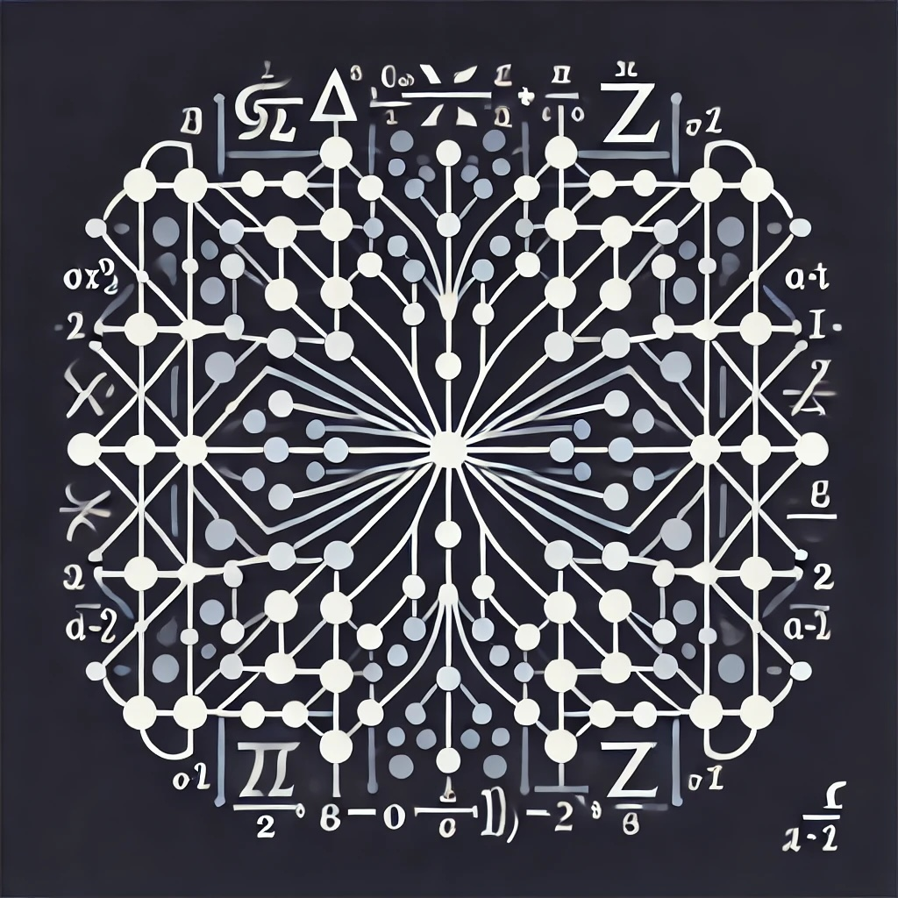

Neural Network Library
Overview
A flexible and efficient neural network library implemented in C++ with Python bindings. This project builds on my experience from UCLA's Math 156 course on machine learning, aiming to create a high-performance framework for various machine learning tasks.
Current Features
- Flexible Layer class implementation
- Efficient feedforward and backpropagation
- Comprehensive training pipeline
- Multiple loss functions and activation functions
- Weight initialization techniques
- Batch normalization
- Python bindings for accessibility
Development Challenges
- Implementing backpropagation correctly across complex architectures
- Optimizing memory usage for large datasets
- Ensuring numerical stability in various network configurations
- Managing compatibility between C++ implementation and Python bindings
- Balancing flexibility with performance in the API design
Current Focus
Active development is centered on:
- Implementing efficient parallelization for training
- Developing robust model serialization for save/load functionality
- Expanding the range of available layer types
- Improving documentation and examples
- Adding comprehensive unit tests
Technical Capabilities
Network Architecture
Modular design with customizable layer configurations
Training System
Flexible optimization with various learning algorithms
Model Management
Checkpoint system with model serialization